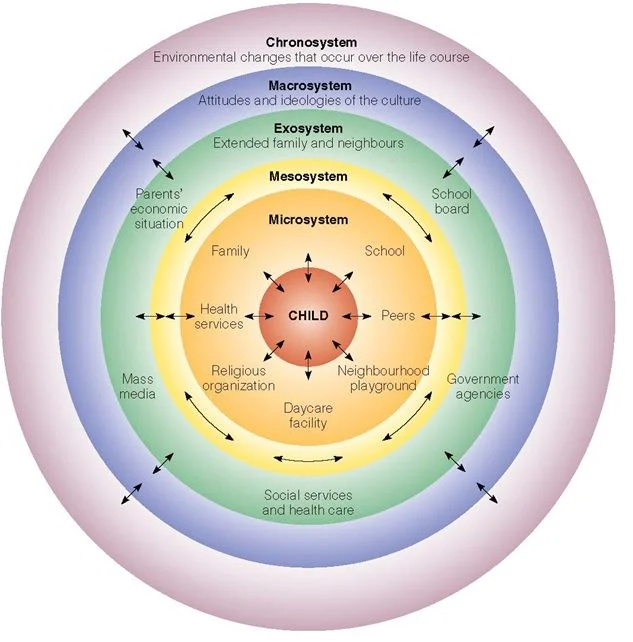

On Atomization
![]()
On Atomization:
Work in Progress. Brainstorm for NSF Grant.
What is Atomization?
Social atomization is an abstract, psychological condition, in which individuals harbor a sense of purposelessness, loneliness, alienation, and isolation. Many theorist have discussed social atomization in various ways but most tend to define social atomization as the self-centering of man around themself. It is an unmooring from group identity. Within this conception, social atomization might be best defined as a combination of Durkheim’s concept of “anomie” and Marx’s concept of “alienation”.
Durkheim’s Concept of Anomie
Marx’s Concept of Alienation
“Anomie”
Atomization is an abstract concept that may be best described as combination of two other concepts, alienation and anomie.
Beginning with the ladder, anomie was developed by Emile Durkheim.
Social atomization is an abstract concept that is perhaps best defined as a “metaphysical loneliness”. It encompasses feelings of loneliness, isolation, and purposeless; it is seeing the world on purely individualistic terms, reducing everything down to the smallest social unit, the individual (atom). Within this framework, an atom has no concept of the whole despite being part of it. An atomized society thus constitutes people acting independent of each other.
More concisely, atomization represents an estrangement between man. Further, it is an estrangement from reality. A psychological distance between others.
To some degree, alienation maybe closer to atomization than loneliness. Atomization might be then seen as a more acute and psychologically deeper form of alienation.
anomie + alienation.
What causes Atomization?
Atomization is a psychological behavior influenced by physical and social relation to the world. The causes of atomization are not fully enumerated as the causes are theoretically endless. However, some authors have provided reasonable theories for what causes groups of people to become atomized.
Early discussion of atomization can be found within the pantheon of sociologist.
Early social scientist had began to note and discuss the changing conditions of society leading to demonstrable changes in the way people interact.
In Origins of Totalitarianism by Hannah Arendt, atomization arises out of a disillusionment from the political system. Political agency, the ability to be political, is what separates man from animal. It is the loss of political agency, the inability to be political, and mans disillusionment from politics is precisely what leads to atomization. Arendt argues that the breakdown of classes gives way to man becoming atomized. The class system provided a structure in which people could sufficiently advocate for their interest in their own well-being. When this system fell apart, the totalitarian movements found fertile ground to increase their size and power.
For Robert Putnam, atomization arises from a lack of social capital. While not as explicit as other authors, Putnam is clearly concerned with a growing lack of engagement within civil society. He places the cause of this on a multitude of factors including: suburbanization, television,
Maybe atomization is the combination of alienation and anomie.
Early 20th century authors first looked at the character of urban cities.
For modern times, a societal fragmentation accelerated by the internet has led to growing atomization.
The Dangers of Atomization
Hannah Arendt argued atomization was central in the rise of the Nazi party, “The truth is that the masses grew out of the fragments of a highly atomized society whose competitive structure and concomitant loneliness of the individual had been held in a check only through membership in a class. The chief characteristic of the mass man is not brutality and backwardness, but his isolation and local of normal social relationships.” p.317.
If Arendt is correct about the atomization of man leading to Nazi death camps, then we should care deeply
Joan Didion, in Slouching Towards Bethlehem, takes note of the atomization present in the counter culture movement, “We were seeing the attempt of a handful of pathetically unequipped children to create a community in a social vacuum. Once we had seen these children, we could no longer overlook the vacuum, no longer pretend that the society’s atomization could be reversed.” p.31 Joan Didion goes on further to argue that the atomization she witnessed in San Francisco was having disastrous consequences, “things fall apart; the center cannot hold;”
Robert Putnam’s idea of social capital is strongly related to civil society as proposed by Almond & Verba. However, Putnam is very much concerned with atomization and the continued individualization of American society.
The concept of atomization regards losing concept of the whole. When people see the world solely
As observed by the aforementioned authors, the atomization of man presents profound complications for politics and the social health of society.
While the dangers of an atomized society are clearly articulated by these aforementioned authors, the source of atomization differs.
Why does Atomization matter?
The estrangement of man from life can lead to dangerous consequences for the function of society. Hannah Arendt so clearly warns of atomization as one of the chief reasons behind the rise of totalitarian movements. The atomization of man leads to dangerous
In America, a growing sense of loneliness, isolation, disillusionment, etc. have
Can we measure atomization?
There is currently no (known) measure of atomization. Because atomization is a constellation of multiple factors, measuring it is difficult.
How would we measure it?
Using the somewhat shaky definition at the start, a proper measurement of atomization must include both individual and macro-level features.
A good starting point may lie in measures of aggregate community features. One measure, Cognability, is a measure of local places that encourage physical activity, social connection, and cognitive stimulation in later life. It also identifies health threats and barriers to accessing community resources. While the measure was intitially created to study cognitive decline and used to assess preventative measures against dementia, the measure may have considerable utility for measuring social and political questions.
What to do about Atomization?
As mentioned above, atomization is a psychological behavior. However, if something is to be done, the solution should not begin with the individual. It may be best to ask, what ecological factors impact the individual to cause a sense of atomization? For this, Urie Brofenbrenner’s ecological systems theory serves as a meaningful framework to base our theory of atomization on. While used to describe factors involved in childhood development, Brofenbrenner’s framework properly illustrates the argument I make about the source of atomization.

Whether directly or indirectly, many disciplines have circled around the concept of atomization but only rarely have addressed it head on.
Translating atomization into a research proposal:
After outlining the concept of atomization as an overarching research interest, I propose some possible research questions that tackle specific aspects of the concept.
- Cognability and internet usage. Do the features of a physical environment shape the usage of a digital environment?
- Cognability is a measure of local places that encourage physical activity, social connection, and cognitive stimulation in later life. It also identifies health threats and barriers to accessing community resources.
- Used to assess a neighborhoods resources to prevent cognition decline and dementia, it may be useful for political questions. Further, it captures elements of atomization and maybe more specifically, social capital.
- If the physical environment affects engagement with a digital environment (internet/social media usage) then how people interact with each other is greatly impacted. These have obvious political ramifications.
- Cognability is a measure of local places that encourage physical activity, social connection, and cognitive stimulation in later life. It also identifies health threats and barriers to accessing community resources.
- Does the cognability of an area have any affect on political socialization and youth development?
- What is the relationship between ecological factors and political ideology.
- Create a measure of atomization(?)
- Atomization overtime
- When an individual becomes atomized, how do they act within an American context?
- Effect of atomization on extreme policy adoption/support?
- Do certain types of communities have more resiliency to dangerous ideas/politics?
- Imagined communities - how social media has changed how people view their community.
- Atomization and social movements. How atomized individuals find purpose in extremist ideology. (Very Arendtian)
- Why and when does youtube and these social media platforms have so much power over people? I argue the physical environment is not competitive enough and forces people to seek out social needs online.
Citation
@online{neilon2024,
author = {Neilon, Stone},
title = {On {Atomization}},
date = {2024-08-19},
url = {https://stoneneilon.github.io/notes/Comparative_Behavior/},
langid = {en}
}